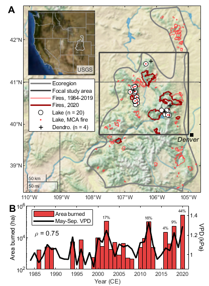
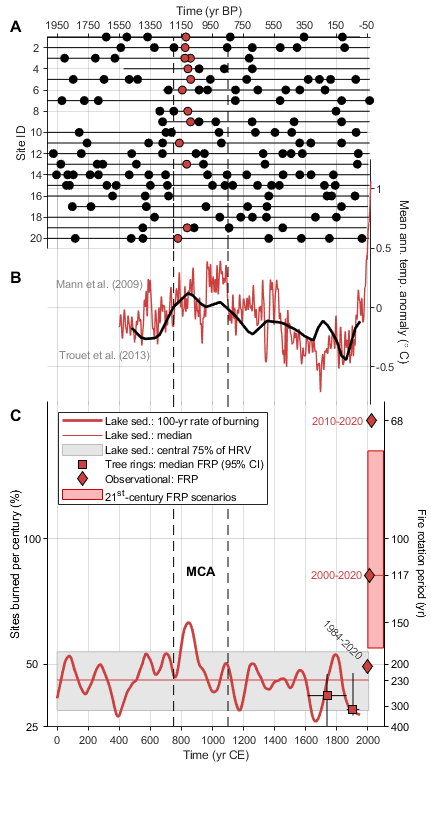
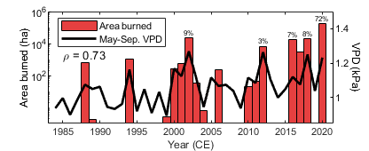
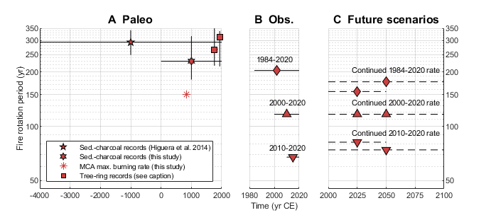
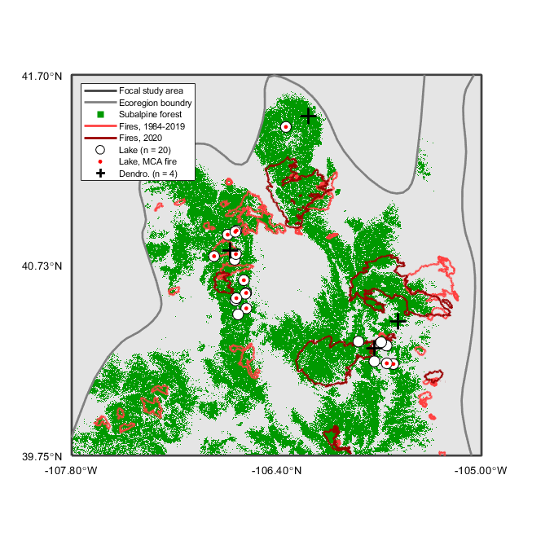

Contents
- ReadMe
- SET working directory and data directory
- LOAD lake locations and metadata
- LOAD sediment-charocal based fire history data
- LOAD MTBS + 2019 + 2020 fire perimiters and ecoregions - SPATIAL DATA
- LOAD MTBS + 2019 + 2020 annual area burned - ASPATIAL DATA
- LOAD LANDFIRE-defined subalpine forest, within focal study area
- LOAD Central Rockies and Grand Lake May-Sep. average VPD, 1979-2020
- LOAD paleo climate data
- DEFINE geographic extent of Central Rockies and Focal Study Area
- CREATE FIGURES
- FIGURE 1: Map and contemporary burned area
- FIGURE 2: Paleo-fire and climate history
- FIGURE S1: Annual area burned area in focal study area (subalpine forest only)
- FIGURE S2: paleo fire history and future FRP scenarios
- FIGURE S3: Focal study area, with LANDFIRE-defined subalpine vegetation
- CALCULATE statistics used in the main text:
ReadMe
Make figures for main text and SI, from: Higuera, P.E., Shuman, B.N., and K.D. Wolf. 202x. Rocky Mountain subalpine forests now burning more than any time in past millennia. In Revisions, PNAS.
FILE REQUIREMENTS:
(1) ...SouthernRockies_site_metadata.csv (2) ...Calder_et_al_CharResults.csv (3) ...ROMO_CharResults.csv (4) ...Minckley_et_al_LWH_CharResults.csv
(5) ...ecoregp075_M331H_M331I.shp
(6) ...SRockies_Fires_1984_2020_WGS84.shp -- Fire perimieteres (7) ...AreaBurned_Ecoregion_FocalStudy_1984_2020.csv -- Area burned statistics
(8) ...EcoSec_M331H_M331I_Mean_VPD_MaySep_1979_2020.csv -- VPD data for Southern Rockies study area, averaged across space. (9) ...GrandLake_Mean_VPD_MaySep_1980_2020.csv -- VPD data for Grank Lake, CO, as point representation for focal study area.
(10)...trouet2013nam480pollen.csv (11)...Mann08_nhcru_eiv_composite_updatedCRU_v102520.csv
DEPENDENCIES: NONE
Created by: P.E. Higuera Created on: November 2020 Updated: April 2021 Edited: 4/2014 for publication, by P.E. Higuera.
University of Montana, PaleoEcology and Fire Ecology Lab https://www.cfc.umt.edu/research/paleoecologylab/ philip.higuera@umontana.edu
clear all close all
SET working directory and data directory
wd = cd; % dataDir = [wd(1:end-4) 'data'];
LOAD lake locations and metadata
lakeData = readtable([dataDir '\SouthernRockies_site_metadata.csv']);
in = lakeData.Use == 1;
lakeData = lakeData(in,:);
LOAD sediment-charocal based fire history data
CalderEtAl = readtable([dataDir '\Calder_et_al_CharResults.csv']); ROMO = readtable([dataDir '\ROMO_CharResults.csv']); LWH = readtable([dataDir '\Minckley_et_al_LWH_CharResults.csv']); C = vertcat(CalderEtAl,ROMO,LWH); in = C.peaks_final == 1; FireYear = C(in,:); siteNames = unique(C.site_name); nSites = length(siteNames);
LOAD MTBS + 2019 + 2020 fire perimiters and ecoregions - SPATIAL DATA
firePerimiters = shaperead([dataDir '\SRockies_Fires_1984_2020_WGS84.shp']); ecoRegion = shaperead([dataDir '\ecoregp075_M331H_M331I.shp']); [lonSoRockies,latSoRockies] = polybool('union',ecoRegion(1).X,ecoRegion(1).Y,ecoRegion(2).X,ecoRegion(2).Y);
LOAD MTBS + 2019 + 2020 annual area burned - ASPATIAL DATA
CR_AB = importdata([dataDir '\AreaBurned_Ecoregion_FocalStudy_1984_2020.csv']); % Area burned statistics for M331H + M331I ecosections (combiend), % for all and subalpine forest only, and for "focal study area" % within these combined ecosections. yr_aab = [1984:2020]; % [yr CE] aab = zeros(length(yr_aab),2); % [ha] for i = 1:length(yr_aab) yrIn = find(CR_AB.data(:,1) == yr_aab(i)); if yrIn aab(i,1) = sum(CR_AB.data(yrIn,2)); % [ha] Ecoregion AAB aab(i,2) = sum(CR_AB.data(yrIn,5)); % [ha] Subalpine forest in % in focal study area AAB end end
LOAD LANDFIRE-defined subalpine forest, within focal study area
[A,R] = geotiffread([dataDir '\SRockies_SubalpineConiferForestESP_WGS84.tif']);
subalpineForest = double(A);
LOAD Central Rockies and Grand Lake May-Sep. average VPD, 1979-2020
VPD = readtable([dataDir '\EcoSec_M331H_M331I_Mean_VPD_MaySep_1979_2020.csv']); VPD_GrandLake = readtable([dataDir '\GrandLake_Mean_VPD_MaySep_1980_2020.csv']);
LOAD paleo climate data
TrouetTemp = csvread([dataDir '\trouet2013nam480pollen.csv'],106); Mann08 = csvread([dataDir '\Mann08_nhcru_eiv_composite_updatedCRU_v102520.csv'],1); % SOURCE: https://crudata.uea.ac.uk/cru/data/temperature/HadCRUT4-nh.dat https://crudata.uea.ac.uk/cru/data/temperature/ % Downloaded 10/25/20 2:46 pm MT % 10-yr moving average, extended from 2006 with CRU.
DEFINE geographic extent of Central Rockies and Focal Study Area
% *Southern Rockies study area* latlim = [38.35 42.8]; % [decimal deg.] lonlim = [-108.6 -104.5]; % [decimal deg.] % *Focal study area: used for FRP calculations to compare to paleo FRP* latlimFoc = [39.75 41.7]; % [decimal deg.] lonlimFoc = [-107.8 -105]; % [decimal deg.]
CREATE FIGURES
smFig = [1 2 9 6]; medFig = [1 2 11 15]; % 11 11 lrgFig = [1 2 18 22]; % 18 22 fs = 8; % Font size % 1 column wide (20.5 picas / 3.42” / 8.7 cm) % 1.5 columns wide (27 picas / 4.5” / 11.4 cm) % 2 columns wide (42.125 picas / 7” / 17.8 cm) % Provide all images at final size. While figures may be sized conservatively % to save page space, PNAS reserves the right to make the final decision on % figure size in published articles and authors may be asked to shorten % manuscripts that exceed the stated length requirement. % Small: approximately 9 cm x 6 cm % Medium: approximately 11 cm x 11 cm % Large: approximately 18 cm x 22 cm % % Ensure that all numbers, letters, and symbols are no smaller than 6 points % (2 mm) and no larger than 12 points (6 mm) after reduction. Keep text % sizing consistent within each graphic. % Preassemble all composite figures. % Submit images in these file formats: TIFF, EPS, PDF, or PPT. % https://www.pnas.org/authors/submitting-your-manuscript#manuscript-formatting-guidelines
FIGURE 1: Map and contemporary burned area
figure(1); clf; set(gcf,'color','w','Units','Centimeters','position',medFig) ax = subplot(3,2,[2 4]); pos = get(ax,'Position'); set(ax,'color','none','xcolor','none','ycolor','none') % *A: Southern Rockies study area* gx = geoaxes; hold on a1 = geoplot(latSoRockies,lonSoRockies,'color',[0.5 0.5 0.5],... 'Linewidth',2); % *Plot MTBS + 2019 + 2020 fire perimiters* nFires = length(firePerimiters); yr_aab = [1984:2020]; for i = 1:nFires if strcmp(firePerimiters(i).Year,'2020') a3 = geoplot(firePerimiters(i).Y,firePerimiters(i).X,'-r',... 'Color',[0.6 0 0],'linewidth',2); else a2 = geoplot(firePerimiters(i).Y,firePerimiters(i).X,'-r',... 'Color',[1 .25 .25],'linewidth',1); end end % *Plot focal study area* a4 = geoplot([latlimFoc(1) latlimFoc(1) latlimFoc(2) latlimFoc(2) latlimFoc(1)],... [lonlimFoc(1) lonlimFoc(2) lonlimFoc(2) lonlimFoc(1) lonlimFoc(1)],... 'color',[0.25 0.25 0.25],'linewidth',2); geoplot(39.7392, -104.9,'sk','MarkerFaceColor','k') text(39.65, -105.35,'\itDenver','Color',[0 0 0]) % *Plot lake locations* in = 1+[3 4 5 6 7 8 10 13 14 16 17 19]; % Index for lakes burned in MCA a5 = geoplot(lakeData.Latitude,lakeData.Longitude,'ok',... 'MarkerFaceColor','w','MarkerSize',7); a6 = geoplot(lakeData.Latitude(in),lakeData.Longitude(in),'or',... 'MarkerFaceColor',[1 .25 .25],'MarkerSize',1.75); % *Plot tree-ring studies* ms = 6; lw = 1.1; a7 = geoplot(41.489185, -106.182506,'+k','MarkerSize',ms,... 'MarkerFaceColor','none','LineWidth',lw); % Kipfmuller and Baker (2000) geoplot(40.438131, -105.571230,'+k','MarkerSize',ms,... 'MarkerFaceColor','none','LineWidth',lw); % Buechling and Baker (2004) geoplot(40.80, -106.72,'+k','MarkerSize',ms,... 'MarkerFaceColor','none','LineWidth',lw); % Howe and Baker (2003)% geoplot(40.875, -107.05,'vk','MarkerFaceColor','none') geoplot(40.3, -105.73,'+k','MarkerSize',ms,'LineWidth',lw); % Sibold et al. (2006) % *SET Basemap* geobasemap('landcover') % geobasemap('usgsimageryonly') geolimits(latlim,lonlim) grid on % pos = [0.1094 -0.9 0.8521 0.8]; pos = [0.1094 0.3268 0.8521 0.6537]; set(gx,'fontsize',fs,...%'LongitudeLabel',[],'LatitudeLabel',[],... 'Position',pos,'MapCenter',[40.6 -107.4],'color','none') gx.LatitudeLabel.String = ' '; gx.LongitudeLabel.String = ''; gx.Grid = 'off'; lgd = legend([a1 a4 a2 a3 a5 a6 a7],'Ecoregion','Focal study area','Fires, 1984-2019',... 'Fires, 2020','Lake (n = 20)','Lake, MCA fire','Dendro. (n = 4)','Location',... 'West','FontSize',fs); lgd.Position = [0.1362 0.54 0.3173 0.1852]; text(42.70,-110.67,'A','FontSize',14,'FontWeight','Bold') % *West-wide map* ax = subplot(3,2,6); pos = get(ax,'Position'); set(ax,'color','none','xcolor','none','ycolor','none') states = shaperead('usastatehi'); % State outlines name = 'usgsimageryonly'; % name = 'colorterrain'; %%%% USGS Imagery + Topo url = "https://basemap.nationalmap.gov/ArcGIS/rest/services/USGSImageryOnly/MapServer/tile/${z}/${y}/${x}"; % name = 'fulldataset' % url = "https://services3.arcgis.com/T4QMspbfLg3qTGWY/arcgis/rest/services/Public_Wildfire_Perimeters_View/FeatureServer/0/query?outFields=*&where=1%3D1"; % %%%% USGS Imagery + Topo % name = 'usgsimagerytopo'; % url = "https://basemap.nationalmap.gov/ArcGIS/rest/services/USGSImageryTopo/MapServer/tile/${z}/${y}/${x}"; attribution = "USGS"; addCustomBasemap(name,url,'Attribution',attribution,... 'MaxZoomLevel',25) gx = geoaxes; hold on for i = 1:47 geoplot(states(i).Y,states(i).X,'color',[0.6 0.6 0.6]) end a1 = geoplot(latSoRockies,lonSoRockies,'color',[0.75 0.75 0.75],'Linewidth',1); geobasemap(name) latlimWest = [30.5 49.5]; lonlimWest = [-125 -102]; geolimits(latlimWest,lonlimWest) grid off gx.LongitudeAxis.Visible = 'off'; gx.LatitudeAxis.Visible = 'off'; pos = [0.1370 0.7366 0.3173 0.2264]; set(gx,'fontsize',fs-2,...%'LongitudeLabel',[],'LatitudeLabel',[],... 'Position',pos,'AxisColor','k','LineWidth',1) % *B: Annual area burned and climate time series* subplot(3,2,[5 6]) x_lim = [1983 2021.5]; x = yr_aab; y = aab(:,1); % [ha] Area burned in entire study region. h = bar(x,y,1); h(1).FaceColor = 'flat'; h(1).CData = [0.9 0.25 0.25]; xlabel('Year (CE)') ylabel('Area burned (ha)') set(gca,'yscale','log','YTick',[100 10000 1000000]) hold on for i = [2002 2012 2016 2018 2020] in = find(x == i); propAb = round(100*(y(in)./sum(y))); text(i,1.25*y(in),[num2str(propAb) '%'],'Rotation',0,'FontSize',fs-2,... 'HorizontalAlignment',... 'Center','VerticalAlignment','Bottom') end yyaxis right x2 = VPD.Year(6:end); y3 = VPD.VPD_kPa(6:end); h2 = plot(x2,y3,'k','linewidth',2); [r, p] = corr(y,y3,'Type','Spearman'); % Correlation between VPD and AAB text(1985,1.225,['\rho = ' num2str(round(r*100)/100)],'FontSize',fs+2) [r p] = corr(x2,y3,'Type','Spearman'); % Correlation between VPD and year [r p] = corr(x',y,'Type','Spearman'); % Correlation between aab and year ylabel('VPD (kPa)','Rotation',270,'VerticalAlignment','Bottom') ylim([0.85 1.5]) legend([h h2],'Area burned','May-Sep. VPD',... 'Location','NorthWest','FontSize',fs); xlim(x_lim) pos = [0.1250 0.0582 0.78 0.2222];%[0.0973 0.0859 0.8878 0.2802]; set(gca,'ycolor','k','position',pos,'fontsize',fs) text(1979,1.475,'B','FontSize',14,'FontWeight','Bold')
FIGURE 2: Paleo-fire and climate history
figure(2); clf set(gcf,'color','w','Units','Centimeters','position',[1 2 11.4 22]) x_lim = [-65 2020]; x_tick = [0:200:2020]; %%%% Plot paleo-fire network subplot(4,1,[1]) [lat, orderIn] = sort(lakeData.Latitude,'ascend'); yr_i = [0:25:1950]; % [yr CE] for i = 1:nSites in = find(strncmp(siteNames(orderIn(i)),C.site_name,10)); % Index for sample from site i. x = 1950-C.age_top(in); y = C.char_acc(in); peak = C.peaks_final(in); in = peak > 0; x2 = x(in); y2 = peak(in); if i == 1; hold on; end plot(x,i.*ones(size(x)),'k-') plot(x2,y2.*i,'ok','MarkerFaceColor','k') in2 = find([x2 < 820+50] .* [x2 >= 820-50]); plot(x2(in2),y2(in2).*i,'ok','MarkerFaceColor',[0.8 0.25 0.25]) end plot(1950-[850 850],[0 nSites+2],'--k') plot(1950-[1200 1200],[0 nSites+2],'--k') pos = [0.1100 0.70 0.75 0.2558]; set(gca,'xdir','normal','ytick',[1:nSites],'yticklabel',siteNames(orderIn),... 'xlim',x_lim,'xtick',x_tick,'XTickLabel',[1950-x_tick],... 'ylim',[0 nSites],'tickdir','out',... 'XAxisLocation','Top','YTick',[1:2:20],'YTickLabel',fliplr([2:2:20]),... 'FontSize',fs,'color','none','position',pos) grid on xlabel('Time (yr BP)') ylabel('Site ID') %%%% Plot paleo temperature records subplot(4,1,3) hold on x = Mann08(:,1); in = find([x >= 1900] .* [x < 2000]); y = Mann08(:,2) - mean(Mann08(in,2)); x2 = TrouetTemp(:,1); in = find([x2 >= 1900] .* [x2 < 2000]); y2 = TrouetTemp(:,2);% - mean(TrouetTemp(:,2)); plot(x,y,'k','LineWidth',1,'color',[0.8 0.25 0.25]); plot(x2,y2,'k','LineWidth',2); y_lim = [-0.82 1.25]; %get(gca,'ylim'); plot(1950-[850 850],y_lim,'--k') plot(1950-[1200 1200],y_lim,'--k') ylim(y_lim) xlim(x_lim) text(550,0.2,'Mann et al. (2009)','HorizontalAlignment','Right',... 'FontSize',fs,'Color',[0.5 0.5 0.5]) text(599,-0.40,'Trouet et al. (2013)','HorizontalAlignment','Right',... 'FontSize',fs,'Color',[0.5 0.5 0.5]) ylabel('Mean ann. temp. anomaly (\circ C)','Rotation',270,... 'VerticalAlignment','Bottom') pos = [ 0.1100 0.5128 0.75 0.2959]; set(gca,'xcolor','none','YAxisLocation','Right','tickdir','out',... 'Xtick',x_tick,'color','none','position',pos,'fontsize',fs,... 'YTick',[-0.5 0 0.5 1 1.5],'YTickLabel',{'-0.5' '0' '0.5' '1'}) box off grid on %%%% Plot percent sites burned summary subplot(4,1,[4]) x_lim_C = [x_lim(1) 2110]; y_lim = [0.25 1.55]; fireYears = 1950-FireYear.age_top; timeWindow = 100; % [yr] timeIncrement = 10; % [yr] xi = [0:timeIncrement:1950]; % [yr CE] nFires_i = NaN(size(xi)); nSites_i = NaN(size(xi)); for i = 1:length(xi) target = [xi(i)-timeWindow/2 xi(i)+timeWindow/2]; in = find([fireYears > target(1)] .* [fireYears <= target(2)]); nFires_i(i) = length(in); % [#] Total number of fires in target window. in2 = find([(1950-C.age_top) > target(1)] .*... [(1950-C.age_top) <= target(2)]); nSites_i(i) = length(unique(C.site_name(in2))); % [#] Number of sites recording. end perSitesBurned = nFires_i./nSites_i; % [%] Percent sites burned yi = smooth(perSitesBurned,timeIncrement,'lowess'); PSB_ci = prctile(perSitesBurned,[12.5 100-12.5]); X = [0 2005 2005 0 0]; Y = [PSB_ci(1) PSB_ci(1) PSB_ci(2) PSB_ci(2) PSB_ci(1)]; c = fill(X,Y,[0.9 0.9 0.9],'EdgeColor',[0.75 0.75 0.75]); hold on b = plot([0 2005],[median(perSitesBurned) median(perSitesBurned)],'r','Color',... [0.8 0.25 0.25]); a = plot(xi,yi,'-r','linewidth',2,'color',[0.8 0.25 0.25]); plot(1950-[850 850],y_lim,'k--') plot(1950-[1200 1200],y_lim,'k--') grid on ylabel('Sites burned per century (%)') y_tick = [0.25 100/300 100/230 0.5 0.6664 100/117 1 100/68]; set(gca,'ycolor','k','tickdir','out','xtick',[0:200:2020],'ytick',... [0.25 0.5 1 ],'yticklabel',... [25 50 100]) ylim(y_lim) xlim(x_lim_C) yyaxis right ylim(y_lim) pos3 = ((1+diff(x_lim_C))*0.75)/(1+diff(x_lim)); pos = [0.1100 0.125 pos3 0.3925]; set(gca,'ytick',y_tick,'ycolor','k','fontsize',fs,'yticklabel',... round(100./y_tick),'position',pos,'color','none') text(2350, y_lim(1)+0.5*diff(y_lim),'Fire rotation period (yr)',... 'Rotation',270,'HorizontalAlignment','Center','FontSize',fs) xlabel('Time (yr CE)') box off %%%% Add future range of variability X2 = [2000 2100 2100 2000 2000]; Y2 = [100/74 100/74 100/177 100/177 100/74]; f = fill(X2,Y2,[0.98 0.72 0.72],'EdgeColor',[0.8 0 0]); % *Add tree-ring based fire rotation periods:* % dendroFRP = [145 273 238 405 326 346 281 127]; % Sibold et al. 2007 % % (values 1-5 here, from Table 4) + Bucheling and Baker 2004 (346) + % % Howe and Baker 2003 (281) + Kipfmueller and Baker 2000 (127), % % as summarized in Baker (2009, Table 8.1). % dendro_FRPci = prctile(bootstrp(10000,'mean',dendroFRP),[2.5 97.5]); % SiboldYr = [-50 1950-1650]; % plot([1700 2000],[100/mean(dndroFRP) 100/mean(dndroFRP)],'k-') % plot([1852 1852],100./dendro_FRPci,'k-') % d = plot(1852,100/mean(dndroFRP),'sk','markerfacecolor',[0.8 0.25 0.25],... % 'markersize',10); %%%% Split up dendro data into two time periods dendroFRP_1737 = [252 227 217 634 420 127 349 281]; dendroFRP_1904 = [338 329 215 247 1293 170 332 295]; % Sibold et al. 2007 % (values 1-5 here, from Table 4) + Bucheling and Baker 2004 (346) + % Howe and Baker 2003 (281) + Kipfmueller and Baker 2000 (127), % as summarized in Baker (2009, Table 8.1). dendroFRP_1760ci = prctile(bootstrp(10000,'median',dendroFRP_1737),[2.5 97.5]); dendroFRP_1936ci = prctile(bootstrp(10000,'median',dendroFRP_1904),[2.5 97.5]); plot([1611 1863],[100/median(dendroFRP_1737) 100/median(dendroFRP_1737)],'k-') plot([1737 1737],100./dendroFRP_1760ci,'k-') plot([1864 1944],[100/median(dendroFRP_1904) 100/median(dendroFRP_1904)],'k-') plot([1904 1904],100./dendroFRP_1936ci,'k-') d = plot(1737,100/median(dendroFRP_1737),'sk','markerfacecolor',[0.8 0.25 0.25],... 'markersize',8); plot(1904,100/median(dendroFRP_1904),'sk','markerfacecolor',[0.8 0.25 0.25],... 'markersize',8); %%%% Plot contemporary FRPs e = plot(2000,100/204,'dk','markerfacecolor',[0.8 0.25 0.25],... 'MarkerSize',8); % c. 204 yr FRP: 1984-2020 plot([2000 2100],[100/117 100/117],'r-','color',[0.8 0.25 0.25]) plot(2010,100/117,'dk','markerfacecolor',[0.8 0.25 0.25],... 'MarkerSize',8); % c. 117 yr FRP: 2000-2020 plot(2020,100/68,'dk','markerfacecolor',[0.8 0.25 0.25],... 'MarkerSize',8) % c. 68 yr FRP: 2000-2020 text(2010,100/68,'2010-2020 ','HorizontalAlignment','Right',... 'Color',[0.8 0.25 0.25],'fontsize',fs) text(2000,100/117,'2000-2020 ','HorizontalAlignment','Right',... 'Color',[0.8 0.25 0.25],'fontsize',fs) text(1995,0.5,'1984-2020 ','HorizontalAlignment','Right',... 'Color',[0.3 0.3 0.3],'Rotation',-45,'fontsize',fs) text([750+(1100-750)/2],0.875,'MCA','FontWeight','Bold',... 'HorizontalAlignment','Center') %%%% Annotate figure text(-300,1.15+1.9,'A','FontSize',12,'FontWeight','Bold') text(-300,0.9+1.15,'B','FontSize',12,'FontWeight','Bold') text(-300,0.75+0.75,'C','FontSize',12,'FontWeight','Bold') legend([a,b,c,d,e,f],'Lake sed.: 100-yr rate of burning',... 'Lake sed.: median','Lake sed.: central 75% of HRV',... 'Tree rings: median FRP (95% CI)',... 'Observational: FRP',... '21^s^t-century FRP scenarios',... 'Location','NorthWest','FontSize',8)
FIGURE S1: Annual area burned area in focal study area (subalpine forest only)
figure(3); clf; set(gcf,'color','w','Units','Centimeters','position',[1 1 11.0067 4.5]) x_lim = [1983 2021.5]; x = yr_aab; y = aab(:,2); % [ha] Area burned in entire study region. h = bar(x,y,1); h(1).FaceColor = 'flat'; h(1).CData = [0.9 0.25 0.25]; xlabel('Year (CE)') ylabel('Area burned (ha)') set(gca,'yscale','log','YTick',[100 10000 1000000]) ylim([0.1 1000000]) hold on for i = [2002 2012 2016 2018 2020] in = find(x == i); propAb = round(100*(y(in)./sum(y))); text(i,1.1*y(in),[num2str(propAb) '%'],'Rotation',0,'FontSize',fs-2,... 'HorizontalAlignment',... 'Center','VerticalAlignment','Bottom') end yyaxis right x2 = VPD_GrandLake.Year(5:end); y3 = VPD_GrandLake.VPD_kPa(5:end); h2 = plot(x2,y3,'k','linewidth',2); [r p] = corr(y,y3,'Type','Spearman'); % Correlation between VPD and AAB text(1985,1.25,['\rho = ' num2str(round(r*100)/100)],'FontSize',fs+2) [r p] = corr(x2,y3,'Type','Spearman'); % Correlation between VPD and year [r p] = corr(x',y,'Type','Spearman'); % Correlation between aab and year ylabel('VPD (kPa)','Rotation',270,'VerticalAlignment','Bottom') ylim([0.85 1.5]) legend([h h2],'Area burned','May-Sep. VPD',... 'Location','NorthWest','FontSize',fs-0) xlim(x_lim) set(gca,'ycolor','k','fontsize',fs)
FIGURE S2: paleo fire history and future FRP scenarios
figure(4); clf set(gcf,'color','w','Units','Centimeters','position',[1 2 18.3 24.7/3]) y_lim = [45 350]; subplot(1,6,[1 3]) %%%% This study - composite charcoal record plot([0 2000],[230 230],'k') hold on plot([1000 1000],100./PSB_ci,'k') % 25-75 percentile; a1 = plot(1000,230,'hk','MarkerFaceColor',[0.8 0.25 0.25],... 'MarkerSize',8); plot([840 840],[150 150],'k') a2 = plot(840,150,'*k','Color',[0.8 0.25 0.25],... 'MarkerSize',8); %%%% Higuera et al. 2014 plot([-4000 2000],[293 293],'k') plot([-1000 -1000],[249 341],'k') a3 = plot(-1000,293,'pk','MarkerFaceColor',[0.8 0.25 0.25],... 'MarkerSize',8); %%%% Tree-ring records % plot([1700 2000],[270 270],'k') % plot([1850 1850],[205 329],'k') % a4 = plot(1850,270,'sk','MarkerFaceColor',[0.8 0.25 0.25],'MarkerSize',8); % pos = [0.0808 0.1412 0.3714 0.7288]; % set(gca,'yscale','log','FontSize',fs,'position',pos) % ylim(y_lim) % ylabel('Fire rotation period (yr)') % grid on % box off plot([1650 1870],[median(dendroFRP_1737) median(dendroFRP_1737)],'k-') plot([1760 1760],dendroFRP_1760ci,'k-') plot([1871 2000],[median(dendroFRP_1904) median(dendroFRP_1904)],'k-') plot([1936 1936],dendroFRP_1936ci,'k-') a4 = plot(1760,median(dendroFRP_1737),'sk','markerfacecolor',[0.8 0.25 0.25],... 'markersize',8); plot(1936,median(dendroFRP_1904),'sk','markerfacecolor',[0.8 0.25 0.25],... 'markersize',8); pos = [0.0808 0.1412 0.3714 0.7288]; set(gca,'yscale','log','FontSize',fs,'position',pos) ylim(y_lim) ylabel('Fire rotation period (yr)') grid on box off legend([a3 a1 a2 a4],'Sed.-charcoal records (Higuera et al. 2014)',... 'Sed.-charcoal records (this study)',... 'MCA max. burning rate (this study)',... 'Tree-ring records (see caption)',... 'Location','Southwest') title('A Paleo','FontSize',fs+4) xlabel(' ') %%%% Contemporary FRP subplot(1,6,4) A = 1395870; % [ha] Size of focal study area t = [1984 2020; 2000 2020; 2010 2020]; % [yr] Time periods FRR_obs = NaN(length(t),1); Sum_Ai = NaN(length(t),1); symb = ['d','^','v']; for i = 1:length(t) in = find(yr_aab == t(i,1)); Sum_Ai(i) = sum(aab(in:end,2)); FRR_obs(i) = (diff(t(i,:))+1)/(Sum_Ai(i)/A); % [yr] plot(t(i,:),[FRR_obs(i) FRR_obs(i)],'k') if in == 1; hold on; end plot(mean(t(i,:)),FRR_obs(i),'dk','Marker',symb(i),... 'MarkerFaceColor',[0.8 0.25 0.25],'MarkerSize',8) end xlabel('Time (yr CE)') pos2 = get(gca,'position'); pos2([1 2 4]) = [0.5076 0.1412 0.7288]; set(gca,'yscale','log','ycolor','none','xtick',[1980 2000 2020],... 'position',pos2) ylim(y_lim) grid on box off text(2000,235,'1984-2020','FontSize',fs,'HorizontalAlignment','Center') text(2010,135,'2000-2020','FontSize',fs,'HorizontalAlignment','Center') text(2010,76,'2010-2020','FontSize',fs,'HorizontalAlignment','Center') title('B Obs.','FontSize',fs+4) %%%% FRP under future scenarios subplot(1,6,[5 6]) t = [2000 2050; 2000 2050; 2000 2050; 2000 2100; 2000 2100; 2000 2100]; Sum_Ai_Future = [Sum_Ai(2) + Sum_Ai(1)*(30/37);... Sum_Ai(2) + Sum_Ai(2)*(30/21);... Sum_Ai(2) + Sum_Ai(3)*(30/11);... Sum_Ai(2) + Sum_Ai(1)*(80/37);... Sum_Ai(2) + Sum_Ai(2)*(80/21);... Sum_Ai(2) + Sum_Ai(3)*(80/11)]; % 1 = repeat 1984-2020 rate; % 2 = repeat 2000-2020 rate; % 3 = repeat 2010-2020 rate. % 30 yr = 2021 through 2050; % 80 yr = 2021 through 2100; % 37 yr = 1984-2020, inclusive % 21 yr = 2000-2020, inclusive % 11 yr = 2010-2020, inclusive FRP_future = NaN(length(t),1); symb = ['d','^','v','d','^','v']; for i = 1:length(t) in = find(yr_aab == t(i,1)); FRP_future(i) = (diff(t(i,:))+1)/(Sum_Ai_Future(i)/A); plot(t(i,:),[FRP_future(i) FRP_future(i)],'--k') if i == 1; hold on; end plot(mean(t(i,:)),FRP_future(i),'^k','MarkerFaceColor',[0.8 0.25 0.25],... 'MarkerSize',8,'Marker',symb(i)) end plot(mean(t(2,:)),FRP_future(2),'^k','MarkerFaceColor',[0.8 0.25 0.25],... 'MarkerSize',8) text(2020,205,'Continued 1984-2020 rate','FontSize',fs) text(2020,135,'Continued 2000-2020 rate','FontSize',fs) text(2020,92,'Continued 2010-2020 rate','FontSize',fs) pos3 = get(gca,'position'); pos3([1 2 4]) = [0.6682 0.1412 0.7288]; set(gca,'yscale','log','yaxislocation','right','xtick',[2000:25:2100],... 'FontSize',fs,'position',pos3) ylim(y_lim) grid on box off title('C Future scenarios','FontSize',fs+4)
FIGURE S3: Focal study area, with LANDFIRE-defined subalpine vegetation
figure(5); clf; %%%% Display focal study area imshow(subalpineForest); hold on colormap([0.9 0.9 0.9; 0 0.6 0]) %%%% Plot focal study area [latlimFoc_dis,lonlimFoc_dis] = geographicToDiscrete(R,latlimFoc,lonlimFoc); a1 = plot([lonlimFoc_dis(1) lonlimFoc_dis(2) lonlimFoc_dis(2)... lonlimFoc_dis(1) lonlimFoc_dis(1)],... [latlimFoc_dis(1) latlimFoc_dis(1) latlimFoc_dis(2)... latlimFoc_dis(2) latlimFoc_dis(1)],... 'color',[0.25 0.25 0.25],'linewidth',2); xlim(lonlimFoc_dis) ylim(fliplr(latlimFoc_dis)) %%%% Plot Central Rockies ecoregions [I,J] = geographicToDiscrete(R,latSoRockies,lonSoRockies); a2 = plot(J,I,'color',[0.5 0.5 0.5],'Linewidth',2); %%%% Plot MTBS + 2020 area burned nFires = length(firePerimiters); yr_aab = [1984:2020]; for i = 1:nFires if strcmp(firePerimiters(i).Year,'2020') [i,j] = geographicToDiscrete(R,firePerimiters(i).Y,firePerimiters(i).X); a4 = plot(j,i,'-r','Color',[0.6 0 0],'linewidth',2); else [i,j] = geographicToDiscrete(R,firePerimiters(i).Y,firePerimiters(i).X); a3 = plot(j,i,'-r','Color',[1 .25 .25],'linewidth',2); end end %%%% Plot lake locations in = 1+[3 4 5 6 7 8 10 13 14 16 17 19]; % Index for lakes burned in MCA [I,J] = geographicToDiscrete(R,lakeData.Latitude,lakeData.Longitude); a5 = plot(J,I,'ok','MarkerFaceColor','w','MarkerSize',10); a6 = plot(J(in),I(in),'or','MarkerFaceColor','r','MarkerSize',3); %%%% Plot tree-ring studies ms = 15; lw = 2; [j,i] = geographicToDiscrete(R,41.489185,-106.182506); a7 = plot(i,j,'+k','MarkerSize',ms,'MarkerFaceColor','none','LineWidth',lw); % Kipfmuller and Baker (2000) [j,i] = geographicToDiscrete(R,40.438131, -105.571230); plot(i,j,'+k','MarkerSize',ms,'MarkerFaceColor','none','LineWidth',lw); % Buechling and Baker (2004) [j,i] = geographicToDiscrete(R,40.80, -106.72); plot(i,j,'+k','MarkerSize',ms,'MarkerFaceColor','none','LineWidth',lw); % Howe and Baker (2003)% geoplot(40.875, -107.05,'vk','MarkerFaceColor','none') [j,i] = geographicToDiscrete(R,40.3, -105.73); plot(i,j,'+k','MarkerSize',ms,'LineWidth',lw); % Sibold et al. (2006) a0 = plot(-999,-999,'sk','MarkerFaceColor',[0 0.6 0],... 'MarkerEdgeColor','none','MarkerSize',10); legend([a1 a2 a0 a3 a4 a5 a6 a7],'Focal study area','Ecoregion boundry',... 'Subalpine forest','Fires, 1984-2019',... 'Fires, 2020','Lake (n = 20)','Lake, MCA fire','Dendro. (n = 4)','Location',... 'NorthWest','FontSize',fs) set(gcf,'color','w','Units','Centimeters','position',[1 2 18 18]) text(lonlimFoc_dis(1),latlimFoc_dis(1),{' ' ' ' '-107.80\circW'},... 'HorizontalAlignment','Center') [j,i] = geographicToDiscrete(R,39.75, -106.4); text(i,j,{' ' ' ' '-106.40\circN'},'HorizontalAlignment','Center') text(lonlimFoc_dis(2),latlimFoc_dis(1),{' ' ' ' '-105.00\circW'},... 'HorizontalAlignment','Center') text(lonlimFoc_dis(1),latlimFoc_dis(1),{'39.75\circN '},... 'HorizontalAlignment','Right') [j,i] = geographicToDiscrete(R,40.7250, -107.80); text(i,j,{'40.73\circN '},'HorizontalAlignment','Right') text(lonlimFoc_dis(1),latlimFoc_dis(2),{'41.70\circN '},... 'HorizontalAlignment','Right')
CALCULATE statistics used in the main text:
% Two decades with no additional burning would have to follow 2020 for the % 21st-century FRP (i.e., 2000-2040) in our focal study area to return to % the late-Holocene average (of 229 yr). ans = (21+20) / (251033/A) % [yr] FRP from 2000-2040, with 0 ha burned % from 2021-2040. % 251033 ha = focal study area burned area % 21+20 = time from 2000-2040. % Even returning to the 1984-2020 rate of burning through 2050 would keep % the 21st-century FRP near the late-Holocene limit of 150 yr. ha_yr = 252811/(2020-1984+1); % [ha/yr] ans = (2050-2000+1) / ((251003+ha_yr*30)/A)
ans = 227.9807 ans = 156.1222